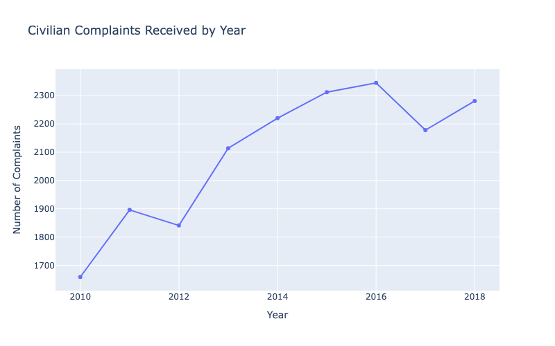
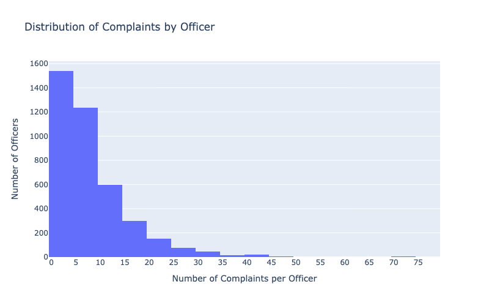

Proposition: The number of complaints is representative of misconduct in the NYPD
FOR the Proposition

Design Decisions and Rationale:
- -1 for the y-axis. The y-axis is truncated so that the difference from 2010 to 2018 looks larger than it actually is
- 2 for the line chart. A line chart is useful for showing trends over time, which is what I want to show. I wanted to show how the yearly complaints change over years
- This plot is persuasive because it shows the total number of complaints throughout the years, which makes it seem like there is a larger number of complaints throughout the years. Without any references to the data, this may seem like large numbers, and it may tarnish the reputation of the NYPD. The truncated y-axis exaggerates the actual differences more than it needs to be.
AGAINST the Proposition

Design Decisions and Rationale:
- I wanted to use a histogram beacuse I wanted to showcase the distribution of number of complaints each officer recreived. Using a histogram, I can plot these densities and show that most officers only receive few complaints.
- I decided to use a bin size of 5. I wanted to use 5 because it allows the bar to not be that cluttered, and can still show general trend of data. -0.5
- I did not truncate the axis this time. This time, I wanted to emphasize the difference of the officers with few complaints and the officers with many complaints. This is to show that a large amount of officers receive little complaints, while only a few officers actually have more than 10 complaints. 0
Final Reflection
One thing that I found difficult was trying to decide how I was going to prove my hypotehsis. The number of complaints may only be a small indicator about the misconduct of the NYPD in reality. I thought that it was straightforward to get what I want my audience to think after looking at the visualization. For the lineplot, it was a lineplot to show a general positive trend, and the histogram to see the large bars on the left side.
I think that ethical analysis and visualization means that your visualizations fully depict what the data is saying without having to go out of your way to change things to prove your point. This meanst that you should not use deception and use the data as it is presented. This way, there is no way that you can persuade your audience about a false trend that is not actually there. It is akin to lying to your audience to prove a false point.
I think that it is hard to distinguish "Acceptable" persuasive choices from misleading ones. At the end of the day, the creator of the visulzations is trying to prove a point with their visualizations. Even some times, creators must use ways that may be confusing for the viewers. For example, if you do not truncate the y axis, you may not be able to show the general trends of the data because it is too small, but truncated the y-axis could be considered deceptive. Additionally, a creator may use any means possible to get their point across, so I think it is hard to distinguish an acceptable choice with a misleading one.